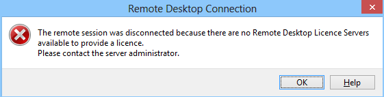
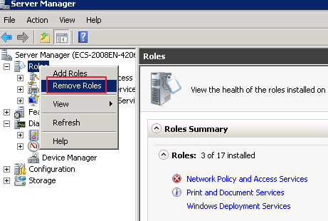
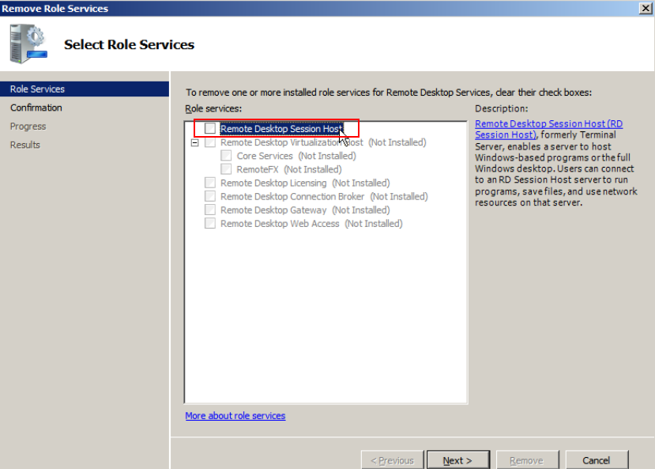
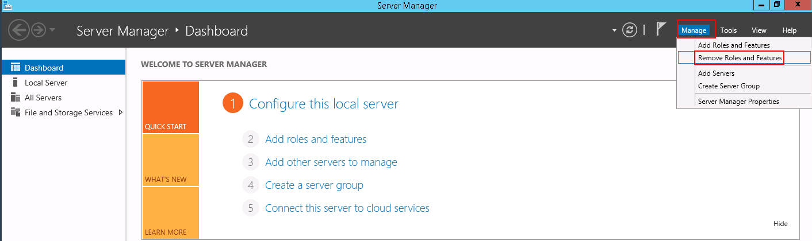
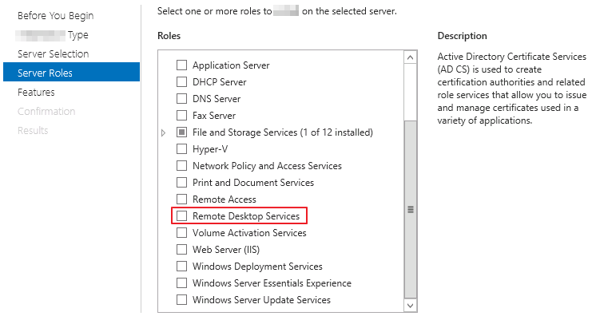

Symptom
An error message is displayed indicating that there are no Remote Desktop License Servers available to provide a license and asks you to contact the administrator.
Figure 1 No Remote Desktop License Servers available to provide a license

Possible Causes
You have installed the Remote Desktop Session Host.
The grace period for Remote Desktop Services is 120 days. If you do not pay for it when the period expires, the service will stop. Windows allows a maximum of two users (including the local user) in remote desktop connections. To allow the access of more users, install the Remote Desktop Session Host and configure the desired number of authorized users. However, installing the Remote Desktop Session Host will automatically revoke the original two free connections. This leads to the preceding fault if desired number of authorized users has not been configured.
Precautions
- The operations described in this section apply to the ECSs running a Windows Server 2008 or Windows Server 2012.
- The ECS must be restarted during the operation, which may interrupt services. Back up data before restarting the ECS.
Windows Server 2008
- Log in to the Windows ECS using VNC available on the management console.
- Open Server Manager, right-click Remote Desktop Services under Roles, and choose Remove Roles from the shortcut menu.
Figure 2 Deleting roles

- In the displayed dialog box, deselect Remote Desktop Session Host and keep clicking Next till you finish the operation.
Figure 3 Deselecting Remote Desktop Session Host

- Click Delete.
- Restart the ECS.
Windows Server 2012
- Log in to the Windows ECS using VNC available on the management console.
- Open Server Manager, choose Manage > Remove Roles and Features, and click Next.
Figure 4 Deleting roles and features

- Select the destination server and click Next.
- Deselect Remote Desktop Services.
Figure 5 Deselecting Remote Desktop Services

- Click Delete.
- Restart the ECS.